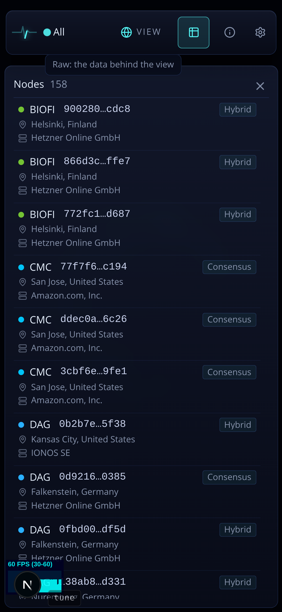

Today the phone rows are the same in Hypergraph and Geography: network + node id first, then layer chip, location and provider. That order answers Hypergraph's question ("what is it in the architecture"). Geography's question is where, so its row should lead with the place. (Counts in the mockups are illustrative.)
0 Now (Geography)

E1 Grouped by country, place first recommended
Country header plates with the node count on the right, in the same plate the snapshot list gets in B1 (one header style for a group in every raw list). Countries in the order the explorer lists them (most nodes first).
Each row leads with the city, the provider under it in muted type. The network and node id move to the right edge, ticker over short id.
The layer chip leaves this row: it is Hypergraph's lens, and the node card one tap away states it.
Hypergraph keeps today's row; the two views now differ only where their questions do.
Nodes 158
United States54
San Jose
Amazon.com, Inc.
CMC77f7f6…c194
San Jose
Amazon.com, Inc.
CMCddec0a…6c26
Kansas City
IONOS SE
DAG0b2b7e…5f38
Germany41
Falkenstein
Hetzner Online GmbH
DAG0d9216…0385
Nuremberg
Hetzner Online GmbH
DAG38ab8…d331
Finland12
Helsinki
Hetzner Online GmbH
BIOFI900280…cdc8
Sorting by a column header (desktop) still works; on phone the grouping is the sort. Under a committed country, the list shows that country's plate only.
E2 Flat rows, place first
No groups: each row reads "City, Country" with the provider beneath, network + id on the right. Sorted by country, then city.
Simpler, but every row repeats its country, and 54 "United States" in a column is what grouping exists to remove.